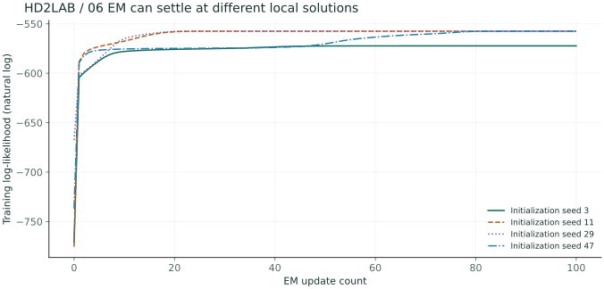
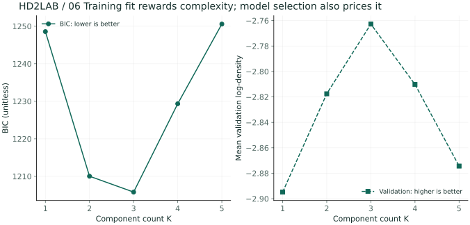
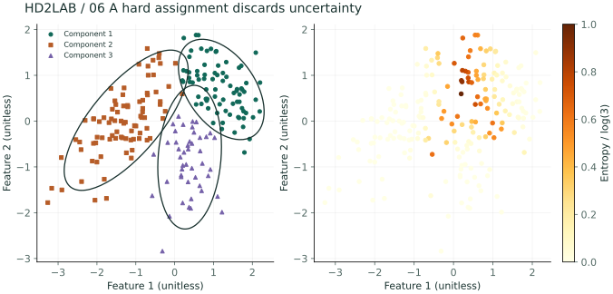
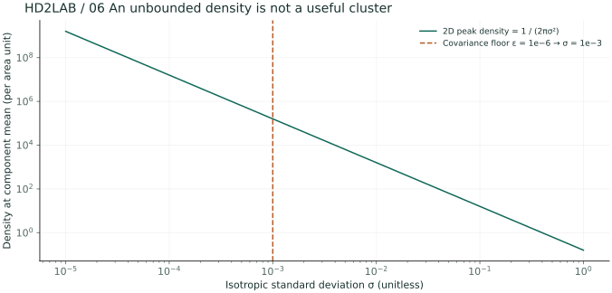

01 / overlapping request types
Let’s consider the virtual coordinates that standardize the size of service requests and their processing times. When different types of data are mixed together, it’s possible to calculate how well each type of data can explain the observations, rather than trying to determine a definitive category for each type of data. GMM represents the entire distribution as a weighted sum of Gaussian distributions with different weights.
The weighted sum of the densities 02 /
Each component has a mean value of μₖ, a variance of Σₖ, and a mixing ratio of πₖ. πₖ represents the probability that a component will be selected before observation. The sum of the weights is 1, and the integral of each density is 1. Therefore, the integral of the mixed density is also 1.
πk ≥ 0, Σkπk = 1
The equipartition line is an ellipse that has its axis aligned with the eigenvector of the covariance matrix. The diagonal covariance is limited to being parallel to the axis, while the full covariance allows for rotation. As the degrees of freedom increase, the number of samples required and the requirements for stability also increase.
The probability of belonging after the observation of 03 /
The component number z represents a latent variable that cannot be observed. The value obtained by calculating the probability of this component after observing xᵢ is the liability value rᵢₖ. The mixing ratio belongs to the entire model, while the liability values belong to each individual observation.
If the weighted densities of the two components are 0.12 and 0.08, then the responsibility values should be 0.6 and 0.4. The largest value can be displayed, but a clear distinction between them isn’t possible. The sum of the responsibility values for each observation should be equal to 1.
04 / E-step and M-step
The observation log odds are combined within the log component. As a result, it’s difficult to calculate the parameters in a closed form. Currently, the E-step component is used to calculate the significance levels, and the M-step component is used to estimate the weighted statistics.
μknew = Σirikxi/Nk
Σknew = Σirik(xi−μknew)(xi−μknew)T/Nk
πknew = Nk/N
If the value of 0,2,5] and some other parameter is 0.8,0.6,0.1], then the number of valid samples is 1.5. The new mean is 1.7/1.5 ≈ 1.133. In case of repeated covariance, the new mean is used. The impact of observations with larger values of the parameter increases.
05 / What Logwood tells us…
In an ideal, exact EM, the observation log-likelihood does not decrease. However, the global maximum is not guaranteed. It can converge to different parameters depending on the initial mean. In a unbounded mixture model, the variance of one component can become infinitely large when it collapses into a single point.
The experiment reduces the peculiarities by adding 10⁻⁶ to the covariance diagonal. Since this approach differs slightly from the pure maximum likelihood method, if there are any deviations or abnormal values, the process will be aborted. Even if the training likelihood is high, future predictions may not always be accurate. The number of components can be determined through separate verifications, or using criteria that reflect the complexity of the problem, such as AIC·BIC.
06 / Implementation of accountability mechanisms and observation
import numpy as np
# Rows are observations and columns are components. Values are log(pi_k) + log N(x_i).
logp = np.array([[-2.1,-2.5],[-900.,-902.]])
shift = logp.max(axis=1, keepdims=True)
q = np.exp(logp-shift)
r = q/q.sum(axis=1, keepdims=True)
print(r)
assert np.allclose(r.sum(axis=1), 1)Repetition 0 It’s the initial stage. 1,5,20,60 Compare the ellipses and logarithmic domains. If the initialization is changed, the data remains fixed; only the initial average value changes. The ellipse has each component… Mahalanobis Distance 2 In reality, it’s not a contour line that represents the overall mixed density.
Is it better if the responsibility is shared among all those with 0, or should it be distributed among those with 1?
In a overlapping distribution, the median value is a natural result. It represents the probability of belonging to that group within the current model. However, this doesn’t guarantee that the model itself is correct.
Is it better to increase the number of components, thereby increasing the training efficiency?
As the expressive power increases, it becomes possible to achieve overfitting. It’s important to check both the complexity and the independence of the results.
Compare the initialization of the advanced stage A / with the number of components involved.
Problem to explore EM Can we say that we have found the best mixture model just because the log-likelihood has increased?
With seed 2606, generate 210 training and 400 independent validation observations. Mixture weights are [.4,.35,.25]; means are [−1.2,0], [1.1,.7], [.3,−.9]. For each component use x=μ+Lz, z~N(0,I₂), with L equal to [[.7,0],[.35,.55]], [[.7,0],[−.2,.5]], or [[.45,0],[0,.6]]. Covariances are LLᵀ, and the three groups overlap partially.
p=(K−1)+2K+3K=6K−1
BIC = −2ℓtrain + p log N
- K=1~5 Initialize each of them as a seed value. 3,11,29,47 Roads 100 It is renewed periodically. The initial average values are obtained by selecting observations without any duplicates. The covariance is the total covariance of all the training data. The mixing ratio is set to zero at the beginning.
- The final log-likelihood of K=3 is -572.284, -557.453, -557.453, -557.455. A monotonically increasing path can also remain below other initial values for a certain period of time.
- In each K, the execution with the highest training log-likelihood is selected. If the number of components differs, in addition to considering the goodness of fit, the number of parameters also needs to be taken into account. The average log-density per observation for the independent validation set is also calculated separately.
- The minimum number of executions of this operation is… BIC It’s… K=3 The maximum validation average log-density is also mentioned here. K=3 It’s important to know the number of components that are generated. This is a privilege of synthetic experiments. However, it’s not always the case that both criteria are met, or that the actual number of components can be accurately determined.


| K | Training Logou | BIC ↓ | Verified average log density ↑ |
|---|---|---|---|
| 1 | -610.914 | 1248.563 | -2.895 |
| 2 | -575.610 | 1210.038 | -2.818 |
| 3 | -557.453 | 1205.808 | -2.763 |
| 4 | -553.181 | 1229.346 | -2.810 |
| 5 | -547.754 | 1250.574 | -2.874 |
Can we determine which component number among 11 and 29 represents the true group 1?
The component numbers remain the same regardless of any substitutions made to them. The log value does not determine the meaning of the numbers. To compare the components of different executions, it’s necessary to first establish relationships such as averages and covariance.
Let’s rewrite the value of B / in terms of entropy.
Problem to explore What kind of information would be lost if we try to represent each observation as just one color, which represents the most likely component?
We use the highest training objective of K=3 for this task. The value of rᵢₖ represents the probability of a particular component belonging to that observation, given the current model. This value is different from the classification accuracy for the correct label, or the probability that the observation is normal. At points where the components overlap, more than one component can explain the observation.
aᵢₖ=log πₖ+log N(xᵢ|μₖ,Σₖ)
Hᵢ=−Σₖrᵢₖ log rᵢₖ, 0≤Hᵢ/log K≤1
- Both r=[.98,.01,.01] and [.51,.48,.01] are both transformed into hard assignment. However, the description for the second element is almost identical to that for the first element.
- In the case where the entropy of a particular component is completely focused, the value of 0 is equal to the sum of the values of 1 and K, each accounting for half of each. This is defined using natural logarithms, and denoted as 0log0=0.
- In this training sample, there are 13 observations where the maximum liability value is less than 0.7. 0.7 is an arbitrary criterion for explanation purposes, and it isn’t a criterion for selecting the number of clusters.
- The concept of “large entropy” represents the degree of ambiguity between different components. Even when we are far away from all components, the density of the entire system can still be low. Therefore, in the detection of anomalies, it’s necessary to consider the log-density separately.

Expand the core calculation code
An excerpt from the corresponding advanced Python function. Full data generation and helper functions are available in the downloads below.
logp = gmm_logp(X, weights, means, covs)
shift = logp.max(axis=1, keepdims=True)
log_norm = shift + np.log(np.exp(logp-shift).sum(axis=1, keepdims=True))
responsibility = np.exp(logp-log_norm)
entropy = -np.sum(responsibility * np.log(np.maximum(responsibility, 1e-300)), axis=1)
normalized_entropy = entropy / np.log(len(weights))
assert np.allclose(responsibility.sum(axis=1), 1)
# In addition to checking for abnormalities, it’s also necessary to check the value of log_norm separately.Diagnose and prevent the collapse of the covariance matrix in the advanced case C /
Problem to explore What temptation does the maximum likelihood face, as the variance of a Gaussian distribution remains constant when the mean is fixed for a given observation?
The average of the Gaussian distributions in the 2-dimensional space has a density of 1/(2πσ²). When one component collapses to a single observation with a density of σ→0, the density at that point becomes infinitely large. Since other components can explain the remaining observations, there is a problem of decay in the unbounded GMM probability space.
This advanced implementation: ε=10−6
- If the value is reduced from σ=1 to 10⁻³, the average density becomes a million times higher. This is why a high-density point doesn’t necessarily mean a good population.
- The covariance diagonal is increased by ε, thereby stabilizing the positive definite matrix. ε serves as a measure of dispersion. It has the effect of adding a lower bound on the eigenvalues for all axes.
- The minimum eigenvalues of the covariance matrix for this case, denoted as K=3, are significantly larger than those for 0.1631 and 10⁻⁶. The sum of the eigenvalues, as well as the finite nature of the matrix, are also verified. Additionally, the change in the log-likelihood function is also checked.
- This adjustment of the diagonal is different from the exact M-step that comes with no constraints. It doesn’t guarantee a non-decrease in all data points. Instead, it monitors the valid number of observations for each small component, the eigenvalues, and the decrease in the likelihood function. If necessary, the initialization and constraints need to be re-engineered.

Will changing all the features by 1,000 times still result in the same effect as ε=10⁻⁶?
It’s not the same. If the characteristic value is increased by 1,000 times, the covariance becomes 10⁶ times. Therefore, the relative effect of the same absolute value ε becomes very small. It’s also necessary to determine the correction factor that corresponds to the unit/scale, and to specify whether this correction factor is standardized or not.
Reproduce the results and change conditions
The figures are precomputed from this chapter's advanced Python experiments. The notebook contains code for seven chapters and 28 figure outputs. Calculations require NumPy; regenerating figures also requires Matplotlib.
Place both Python files in the same folder. The calculation script's
--chapter 6 option runs just this chapter. The figure script's
--output ./figures option generates 28 SVG figures.
Further reading: References for related concepts · Terms and Notation